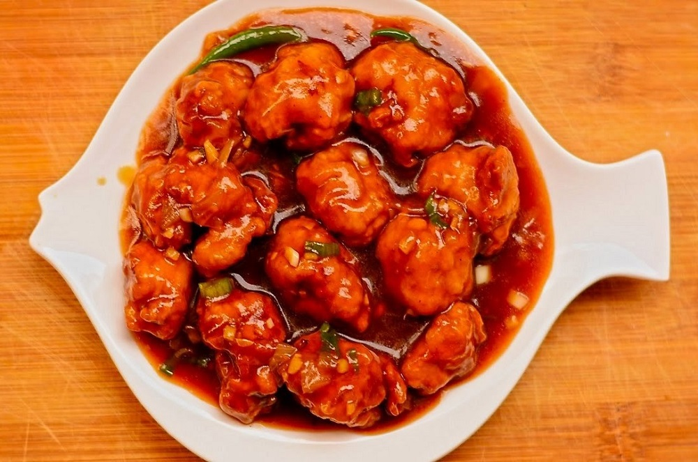

Chicken Manchurian

Description
Chicken Manchurian is a very popular Indo-Chinese dish.
Crispy fried chicken pieces are tossed in a sweet
and savoury sauce and served alongside fried rice or noodles.
Ingredients
- 500 Gram Boneless Chicken Cubes
- 2 Tablespoon Oil
- 1 Green Bell Pepper
- 2 Green Onions
- White Sesame Seeds
Steps
- Marinate the chicken with all the marination ingredients and leave for at least 30 minutes.
- Heat oil for deep frying and drop in the chicken pieces with a spoon. Fry on medium heat till thoroughly cooked. Remove on a paper towel.
- Make the sauce in a bowl and put aside.
- Heat oil in a pan and saute garlic for 1 minute. Add the bell pepper and fry on high heat for 2 minutes only.
- Add the spring onions and fried chicken. Give a good toss and let simmer for 2 minutes.
- Garnish with spring onion and sesame sides.
- Serve with fried rice or noodles.